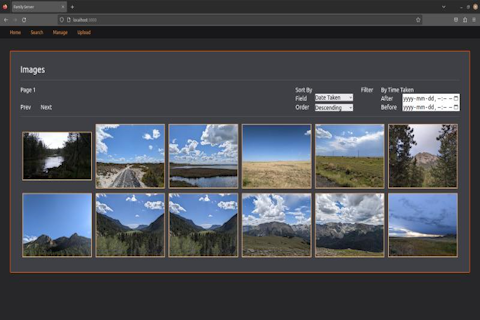

Image Server and Deduplicator
What is it?

A small but notable issue which has haunted our family for some time
now is our storage solution for all of our images. Some of our hard
drives are sitting in cold storage and have multiple duplicates of
images, alongside multiple manually created backups from years ago.
On top of this, we have no centralized location for storing all of
our newer images.
In order to resolve these two issues, I have recently begun working
on two projects: A custom image server / deduplicator (this
project), and a home file server on an old HP desktop. This project
aims to resolve the duplicate image issue, and will run on the file
server. The image server software provides a simple web interface
for uploading and viewing images.
Due to the nature of this project, I do not ever plan on releasing a
publicly-facing image server website or anything big like that. It
is simply meant to be a one-off solution to our image problem.
However, the source code is publicly available should anyone be
interested in forking it.
What can it do?
The main purpose of this project is to detect duplicate images.
However, the project also lets you upload images using the web
interface to make consolidating the large number of small folders of
files easier.
This project also has a simple viewing interface to see
all of the images. This proved convenient during testing, and also
was kind of fun to make, as most of the infrastructure for it had
already been set up. It offers options to sort the images by date
taken, date uploaded, file size, etc. in ascending or descending
order. It also lets you filter the results by the date the images
were taken.
How was it made?
I decided to make this project using multiple technologies that were
new to me, since I was excited to learn them (I also thought they
fit the job well). I used HTMX and Pug in leiu of a heavy frontend
like React, since I knew the interface would be fairly simple. I
also used Tailwindcss for the project, which came with the usual
benefits of quick prototyping. As for the core web server
functionality I went with the tried and true NodeJS.
I decided to split up the project into two parts: the aforementioned
web server, and an image processor/decoder program. Both parts of
the project would essentially only interact through one shared
interface: The database. This database would contain a catalogue of
every image's original name, date taken, and most importantly, a
list of detected duplicate images. This made making a lot of the
viewer's functionality relatively trivial to implement, as the
database had to be created for duplicate detection regardless.
I decided on Go for the image decoding, since I heard that it was
built to be a performant language. One construct in particular had
me very excited to use it:
GoRoutines. They
turned out to be an amazingly simple way of parallelizing the task
of processing the images. In addition, Go surprised me with the way
errors were handled. In Go, functions return errors to a variable,
and you are forced to handle them. This made catching runtime errors
before they happened much simpler!
I developed this
project over the course of about a month in 2023, when I had some
free time between exams. I plan on running it on the file server
that I am working on right now.